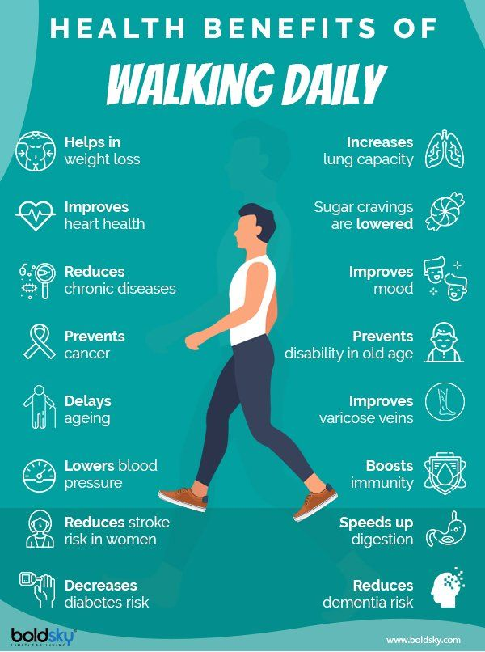
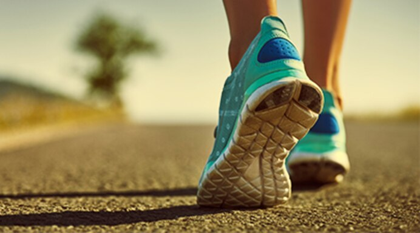

Health Benefits Graph Health Benefits 30 Minute Walks Quote Routine
Harvard on walking NBC News on walking
Go for a walk...seriously taking a walk has really good
benefits for you. It helps you maintain decently healthy physic, it
improves your mood and all around it not that hard!
Just 30 minutes of walking a day can help you a lot if
you don't want hard exercises!

To get the health benefits, try to walk for at least 30 minutes as briskly as you can on most days of the week. ‘Brisk’ means that you can still talk but not sing, and you may be puffing slightly. Moderate activities such as walking pose little health risk but, if you have a medical condition, check with your doctor before starting any new exercise program of physical activity.
"Make walking part of your routine"
Try to make walking a routine – for example, try to walk at the same time each day. Remember, you use the same amount of energy, no matter what time of day you walk, so do what is most convenient for you. You may find that asking someone to walk with you will help make it a regular activity. Some people find that keeping an activity diary or log also makes it easier.
| First Day | Second Day | Third Day | Fourth Day | Fifth Day |
|---|---|---|---|---|
| 800m | 950m | 1,1km | 1,2km | 1,5km |

© Copyright 2020